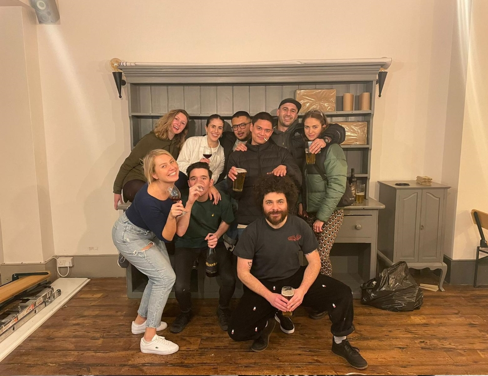
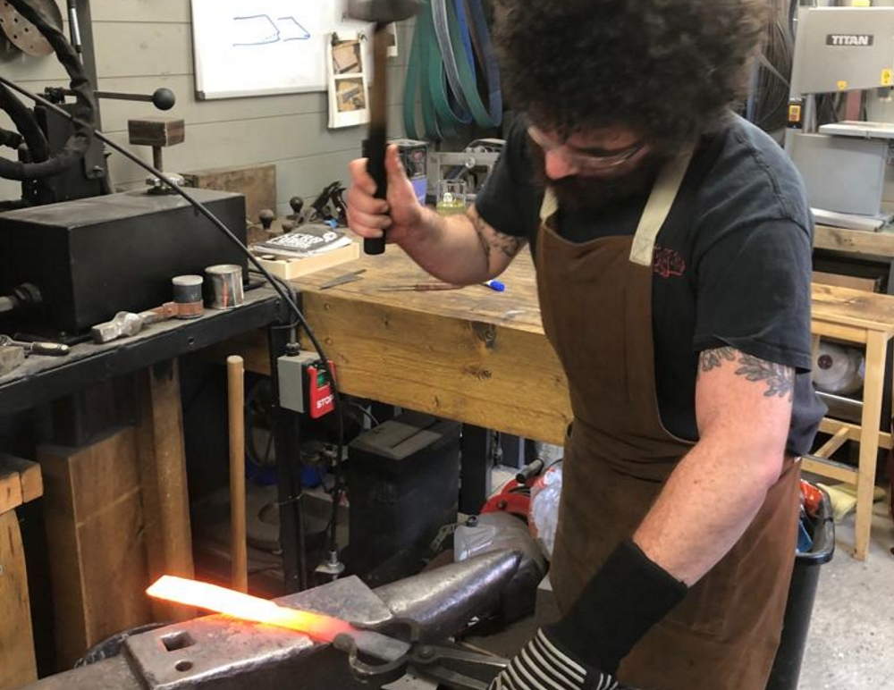
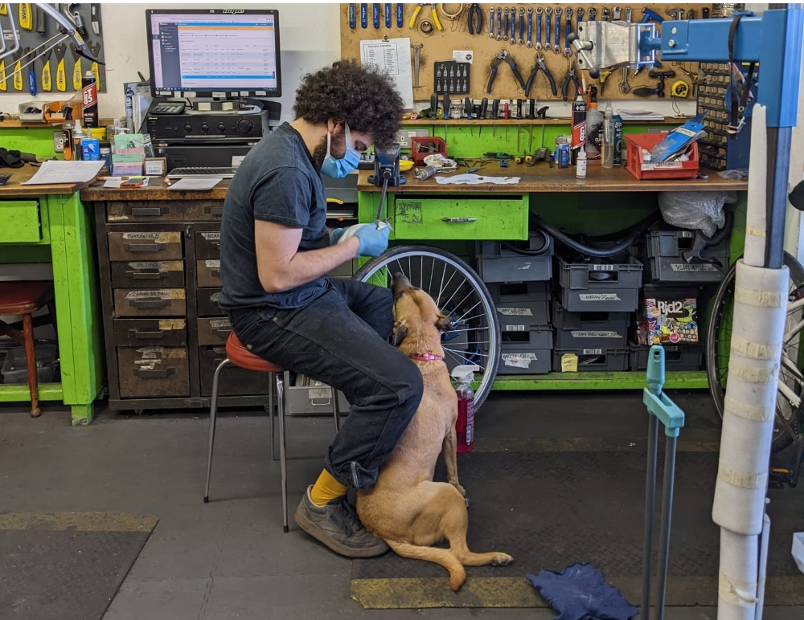
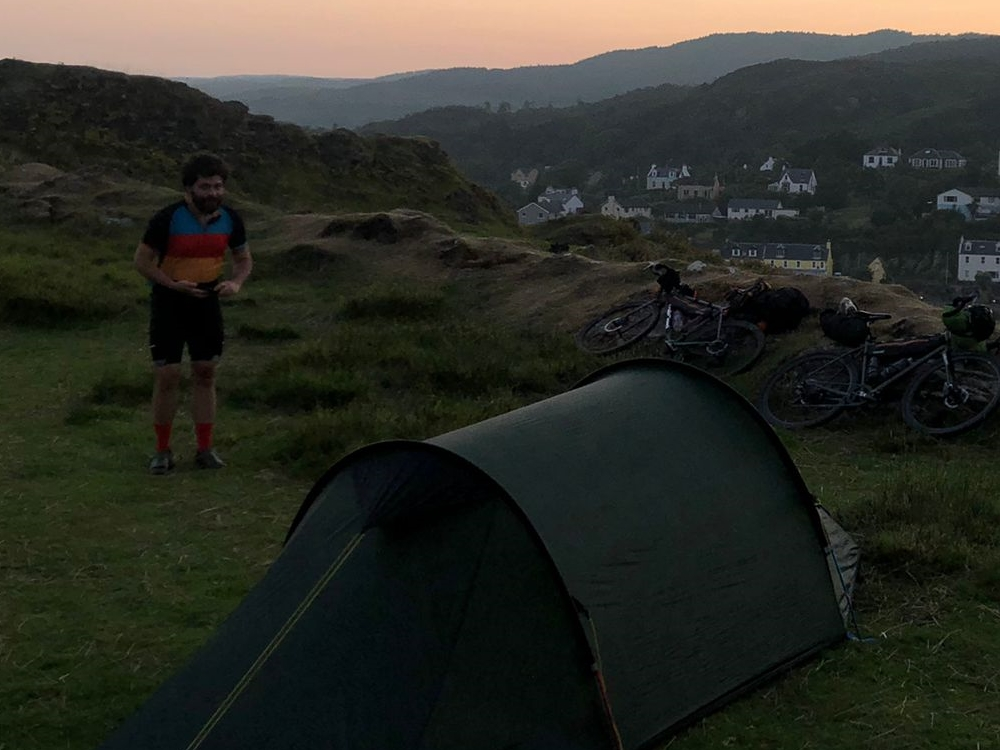

This page is just here so I could have six buttons on my splashscreen! What can I put here?
About me
Hi there, I'm James I'm I was born and raised in London. I loved growing up in such a diverse place full of life with something interesting round every corner! I still get great pleasure exploring with my friends, stumbling across pockets of culture. I studied Electrical and Electronic engineering at Plymouth university. I really enjoyed the more coding focused aspects of the course and late nights with a big group of us crowded round a library table bouncing ideas off of each other. Unfortunately my enjoyment for those parts of the course were far outweighed by how much I hated the more physics heavy aspects which led to me dropping out after my second year. I briefly moved to Montpellier in the south of France and then returned to London where I've been since. For the last 7 years I've been working as a bicycle mechanic in north London. Nowadays most of my free time is spent riding one of my (many) bikes or cooking. If I’m being honest of the two I’m far more likely to be found baking a cake or smoking salmon than riding.




Why web dev
In a weird way I think there's quite a lot of overlap between my current job and being a web developer. Most of my day is spent tracking down faults on bikes, working out how to fix them and then implementing the fix. Standards in cycling change needlessly frequently so I'm very used to tracking down technical documents and write ups for specific parts to make sure I understand how they work and what compatibility issues there might be. My role is also customer facing so I'm fairly comfortable explaining complicated jargon laden problems to people with little knowledge of the subject. Over the last seven years some of my absolute favourite times have been sharing my knowledge with new apprentices or regular customers with time to kill. I'm hoping that becoming a web developer will let me continue doing the parts of my job I love the most whilst getting to learn new a whole new skill set and being a bit less taxing on my body. I've really enjoyed working through the prerequisites for the course. I’ve found myself getting totally absorbed by the projects before and after work every day, pretty much all day I’m thinking about how to implement a feature I want or how to layout a section of my site.
It's been incredibly interesting seeing what happens behind the scenes, I've found myself opening the developer tools on Firefox on pretty much every new website I visit trying to see how a certain feature was implemented. It's also been very eye-opening finding out how much thought goes in to making the web accessible for everyone, it's not something I'd ever really thought about before and I really appreciate getting this new perspective on the web. This is an area I need to work on there’s some small changes I made on this page as I’ve learnt a bit more, for instance originally near enough all of my buttons where actually divs. After getting everything set up I watched a video that mentioned how much accessibility was lost with this method I went straight back and changed them all to buttons. If I had more time I’d love to go through and add correct ARIA to my HTML. I’ll definetly be reading more about it once I’ve finished my projects.
Why FaC
Having worked at a small local bike shop for the last seven years I’ve got very used to a work environment with a sense of community, getting to see familiar faces every day. Some of my favourite times over the last seven years have been teaching work experience kids, apprentices and well anyone that seems interested in learning a bit more about how their bike works. I’ve found it incredibly rewarding sharing my knowledge with others and I always come away having learnt something new or looking at why I’m doing something a certain way. Founders and Coders seems like an incredible opportunity to get involved in tech while getting to keep that sense of community. On top of this it would give me an easy way to continue sharing my knowledge with others and learning from them. I’ve only been able to come to a few of the Tuesday sessions but in those I found that just being around other people all working towards the same goal filled me with excitement. Seeing other peoples design choices and how they’d implemented similar functionality was super helpful.
My recent projects

For this project I had to build a webpage about a hobby I'm intrested in. The main focus of this page was getting started with Document Object Model (DOM). We had to display an up-to-date time on our webpage I also decided to add a countdown timer to get some extra experience using JavaScript and DOM. Once I'd managed to get my date displaying correctly I realised it wouldn't update unless I found a way to periodically call the relevant function,.Thankfully I came across the setInterval() method quite quickly, using this I was able to call my function once every second I didn't know about CSS flex or grid at this point so everything is held in place with padding, I used percentages for my padding hoping it would help improve responsiveness. If I were to build this site again I think I would approach it in a different way. My stylesheet would definitely look quite different!